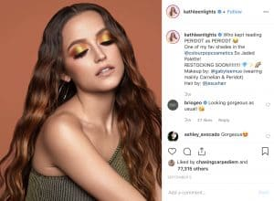
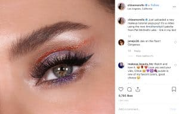

Instagram beauty bloggers pioneered the upheaval of an entire industry. Many of them got their starts on Youtube and then shifted to Instagram, but there’s no denying that these names are big. Remember when nobody knew what contour meant? The beauty industry was revitalized by beauty bloggers. Whether it has a shelf life is a different question.
As 2019 draws to a close, we’ve seen a lot of beauty blogger drama that has called into question whether or not this is still a sustainable industry. It may seem that the heyday of the beauty blogger is over, but a quick look at the most followed of them proves that’s not the case. Many of the people we know and love are still going strong today, and even expanding into other business ventures. Let’s take a look at the most followed Instagram beauty bloggers in 2019.
-
Rihanna (75 million followers)
Ok, we admit this might be cheating a little, since most people know her for her music. But with the launch of Rihanna’s makeup line, Fenty Beauty, not only has she made history as an ultra-inclusive, ultra-diverse businesswoman, she’s also amassed quite an Instagram presence. Rihanna herself currently sits at 75 million followers, while the official Fenty Beauty account has 8 million of its own followers. It’s celebrated for its wide array of skin tone shades available and great highlighter. She’s also branching into lingerie and inclusive fashion. We can’t wait to see what she does next.

2. Huda Kattan (39 million followers)
It comes as no shock that Huda is one of the first beauty bloggers to grace this list. She’s an American-born, Dubai-based makeup artist who’s turned her Instagram following into gold – literally, with the development of her beauty empire. She’s known for ultra-glam looks and her down-to-earth personality. Huda also loves shining the light on up-and-coming beauty bloggers on her Instagram page. With a following of 39 million, Sephora has to fight to keep her products in stock.
3. James Charles (15 million followers)
James Charles is a well-known makeup artist that again got his start on Youtube. Known for his eyebrows and dramatic looks, he was Covergirl’s first-ever “Cover Boy”. He’s an advocate for the LGBT community and has been seen at the Met Gala, and most recently at NY fashion week! His enigmatic greeting of “Hi, sisters!” has captured the hearts of many of his loyal fans.

4. Jeffree Star (14 million followers)
Whether you know Jeffree Star from his MySpace days or from his influencer career, he’s one Instagram beauty blogger you’re sure to remember. Even though he’s had his fair share of controversy, Jeffree’s punkish, glamorous style is so appealing that he has a following of 14 million and has seen a successful launch of his own makeup line.
5. Nikkie de Jaeger (12 million followers)
Nikkie de Jaeger, better known by her Youtube name, Nikkietutorials, gained a following because of her extremely colorful and creative works. The Netherlands-based artist has a fun-loving personality that she shows off in her videos and social media, posting vlogs along with numerous makeup tutorials. She has 12 million followers on both Instagram and Youtube.
6. Zoe Sugg (9 million followers)
Zoe Sugg a.k.a “Zoella” is known as the queen of British beauty bloggers, and it’s clear to see why. She rose to beauty blogger prominence quickly in the early 2010s, largely due to her pleasant personality and eye for style. Since then, Zoe has launched not only her own bath and beauty products, but also written several books. Most recently she’s branched out into app-making with her fellow-Youtuber boyfriend, Alfie Deyes.

7. Jaclyn Hill (6 million followers)
Jaclyn Hill is one of the people who started it all on Youtube. She’s been posting beauty videos on Youtube almost as long as Youtube has been around! When you think of beauty bloggers, hers is definitely one of the first to come to mind. Jaclyn has gone on to have several successful collaborations with brands like MAC and Becca. Her own beauty line, Jaclyn Hill cosmetics, launches this year.
8. MannyMUA (4 million followers)
MannyMUA is another maker of history in being the first boy to rep a makeup brand – but his is Maybelline! One of the original Youtube makeup artists, he still keeps his channel up with a strong focus on beauty, but branches into other types of videos with his friends and family as well. He shows off his creative, timeless looks on Instagram regularly.
9. Kathleen Lights (3 million followers)
Kathleen Lights has been making videos for a long time, and that’s translated into Instagram success. She posts tutorials and reviews of beauty products on her Youtube and Instagram, and she’s got a following of 3 million for it.

10. Desi Perkins (3 million followers)
Desi Perkins’ Kardashian-esque style and makeup tutorials made her one of Youtube’s favorite beauty bloggers in 2013. She posts beauty tutorials as well as vlogs on her Youtube channel. Although today she focuses on more natural looks and fashion, she’s kept her Instagram following of 3 million. We are very jealous of her vacation pictures. She’s got her aesthetic down pat.
 11. Tati Westbrook (2 million followers)
11. Tati Westbrook (2 million followers)
Tati got her start a bit later than some of the other beauty bloggers on our list. But the Internet still loves her as Glamlifeguru. Her honest personality and unbiased reviews of beauty products have cemented her in place as one of the top beauty bloggers.
14. Jackie Aina (1.4 million followers)
Jackie Aina is a breath of fresh air to the beauty blogger world. Her fun-loving personality is on display in all her videos, and she’s an outspoken advocate for black women in the beauty industry. In a word, she is one fierce woman. She currently has 1.4 million followers on Instagram, but following the launch of her palette with Anastasia Beverly Hills, we’re sure she can expect more!
12. Mimi Choi (1.2 million followers)
Mimi Choi’s page will freak you out, because she’s known for creating unbelievably trippy optical illusions entirely with makeup. Seriously, her work is amazing. She’s one of the only people on this list who doesn’t have a Youtube channel, either – she’s built up her following on Instagram alone.
13. Chloe Morello (1.1 million followers)
Chloe Morello is one of the original beauty bloggers to amass a big following. The Australian influencer now lives in Los Angeles, and in addition to a myriad of successful collabs, has launched her own makeup remover. She also has her own mockumentary series making light of her influencer life, using her alter ego “Claudia Morello.”

Beauty Bloggers Are Here to Stay
If you thought beauty bloggers were a thing of the past, think again. Instagram and Youtube revolutionized the beauty industry, and the amount of successful beauty bloggers proves that people can’t get enough. Instagram is a perfect platform to share looks and tutorials with the rest of the world, and they’ve figured that out. With huge followings that are only growing, we don’t think beauty bloggers are going anywhere anytime soon.
The top bloggers in 2019 are pretty much all Youtube veterans, but many of them are shifting away from Youtube to their own business ventures. From their own cosmetic lines to apps to bath products, these aren’t just bloggers, they’re also entrepreneurs. That leaves us wondering what the next wave of beauty bloggers to pick up the mantel will be. If beauty bloggers can survive all this time, we’re confident they always will.